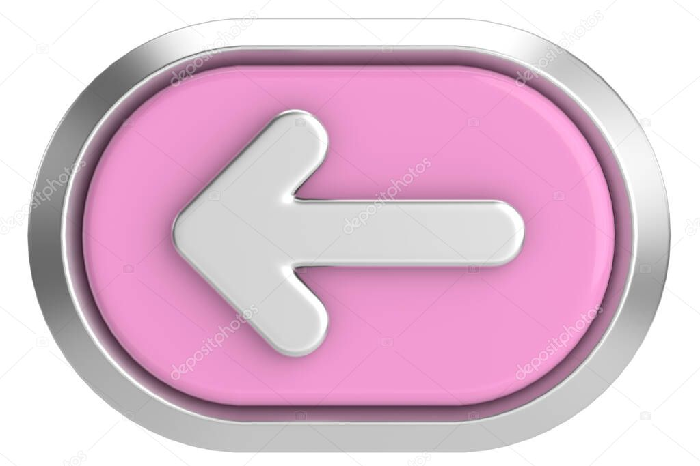

horario
=======horario
>>>>>>> 3ddb6c0c48fd433ef95523b8f8e5ece8439ace7bUsualmente en mis tiempos libres no tengo un horario específico y mis actividades dependen de como me sienta ese día, algunas de las actividades que hago usualmente es leer, que es un hobbie que descubri hace poco, actualmente estoy leyendo "El brillo de las luciernagas", tambien me gusta ver series como Rebelde Way que es mi favorita, escuchar musica.
| Lunes | Martes | Miercoles | Jueves | Viernes |
|---|---|---|---|---|
| Matematicas | Practica | Matematicas | Fisica | Ingles |
| Sociales | ||||
| Quimica | filosofia | Quimica | Edu.Fisica | |
| C. Politicas | Castellano | Fisica | Valores | Estadistica | Castellano | Ingles | Musica | Religion |
